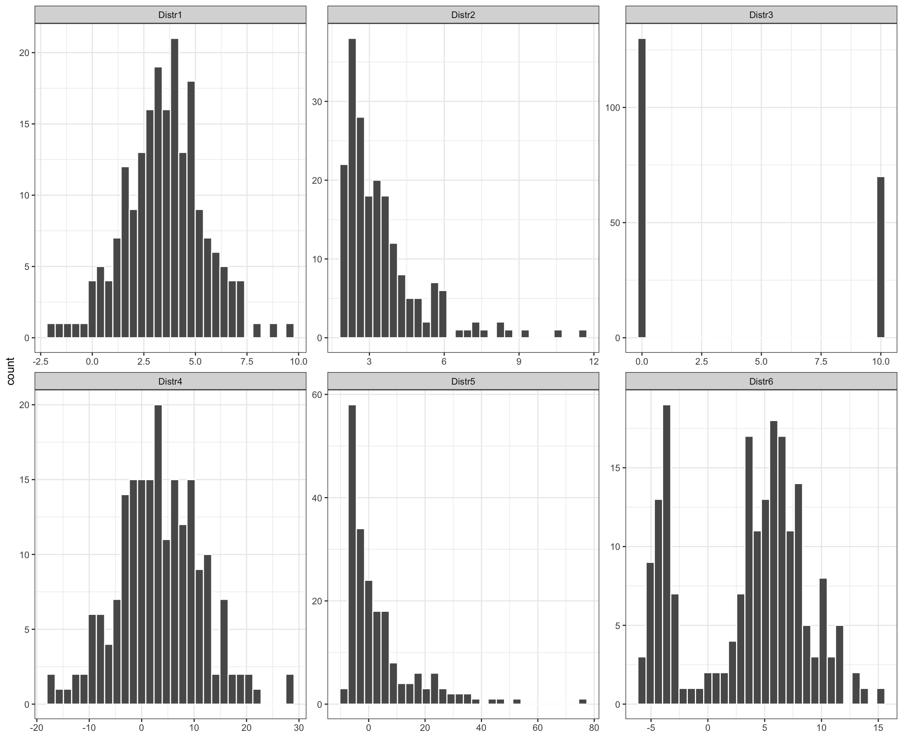

Code
# load libraries
library(tidyverse)
library(magrittr)
library(kableExtra)
library(ggplot2)
library(ggbeeswarm)
library(gridExtra)
library(reshape2)# load libraries
library(tidyverse)
library(magrittr)
library(kableExtra)
library(ggplot2)
library(ggbeeswarm)
library(gridExtra)
library(reshape2)It is not always easy to get a “feeling” for a set of numerical measurements unless we summarize the data in a meaningful way. Diagrams, as shown in the previous chapter, are often a good starting point. We can further condense the information by reporting what constitutes a representative value. If we also know how widely scattered the observations are around it, we can formulate an image of data. The average is a general term for a measure of location and some common ways of calculating the average are mode, mean and median.
Mode values is the value that most common occurs across the measurements. It can be found for numerical and categorical data types.
Median value divides the ordered data values into two equally sized groups, so 50% of the values are below and 50% are above the median value.
The arithmetic mean, also commonly referred to as to mean, is calculated by adding up all the values and diving this by the number of values in the data set.
Mathematically, for \(n\) observations \(x_1, x_2, \dots, x_n\), the arithmetic mean value is calculated as:
\[\bar x = \frac{x_1+x_2+\dots+x_n}{n} = \frac{1}{n}\displaystyle\sum_{i=1}^n x_i\]
As all the values equally contribute to the calculations, the arithmetic mean value is easily affected by outliers and is distorted by skewed distributions. Sometimes, the weighted mean may be more useful, as it allows weights to certain values of the variable of interest. We attach a weight, \(w_i\) to each of the observed values, \(x_i\), in our sample, to reflect this importance and define the weighted mean as: \[\bar{x} = \frac{w_1x_1 + w_2x_2 + \ldots + w_nx_n}{w_1 + w_2 + \ldots + w_n} = \frac{\displaystyle\sum_{i=1}^{n}w_ix_i}{\displaystyle\sum_{i=1}^{n}w_i}\]
Example 4.1 (Lab mice (cont.))
Let’s revisit our lab mice example and focus on data from week 5. What’s the mode value of sex variable? And what is the average weight of mice?
# read in mice data
data.mice <- read_csv("data/mice.csv")
data.mice <- data.mice %>%
mutate(weight = round(weight,2))
# narrow data set to week 5 measurements
data.mice.week5 <- data.mice %>%
filter(week == 5)Mode value
We can find mode value by counting how many times we observe males and females among our mice. The mode value is the most commonly occurring one, here “females”. We have see from counting the values, that we have 53 female and 47 male mice.
# fine mode value
data.mice.week5 %>%
group_by(sex) %>%
tally() %>%
arrange(desc(n)) %>%
print()# A tibble: 2 × 2
sex n
<chr> <int>
1 female 53
2 male 47Arithmetic mean and weighted mean
To calculate the arithmetic mean we can use basic mean() function in R.
# calculate arithmetic mean
data.mice.week5 %$%
mean(weight) %>%
print()[1] 19.3752The above arithmetic mean value may be however not best to reflect an average mice weight since we do not have equal numbers of males and females in the study. Here we know,or rather assume for the purpose of this example, that it is equally likely to find male and females in mice population and hence, in our experiment, males are underrepresented.
We can calculate weighted mean to account for group sizes. We assign weights so that they sum up to 100. The males and females group should have equal influence, so 50/50. As we have 53 females, the female weight is \(w_f = 50 / 53 = 0.9433962\) and male weight is \(w_m = 50 / 47 = 1.06383\). The weighted mean can now be calculated following the above equation and below code and is equal to:
# number of females
n.females <- data.mice.week5 %>%
filter(sex == "female") %>%
nrow()
# number of males
n.males <- data.mice.week5 %>%
filter(sex == "male") %>%
nrow()
# add weights to observations
data.mice.week5.addweight <- data.mice.week5 %>%
mutate(w = ifelse(sex == "male", 50/n.males, 50/n.females)) %>% # assign weights
mutate(wx = weight * w) %$% # multiply weight by their weights values
mean(wx) %>% # average the weighted measurements
print()[1] 19.45934Note that several very different distributions can still have the same mean value.
